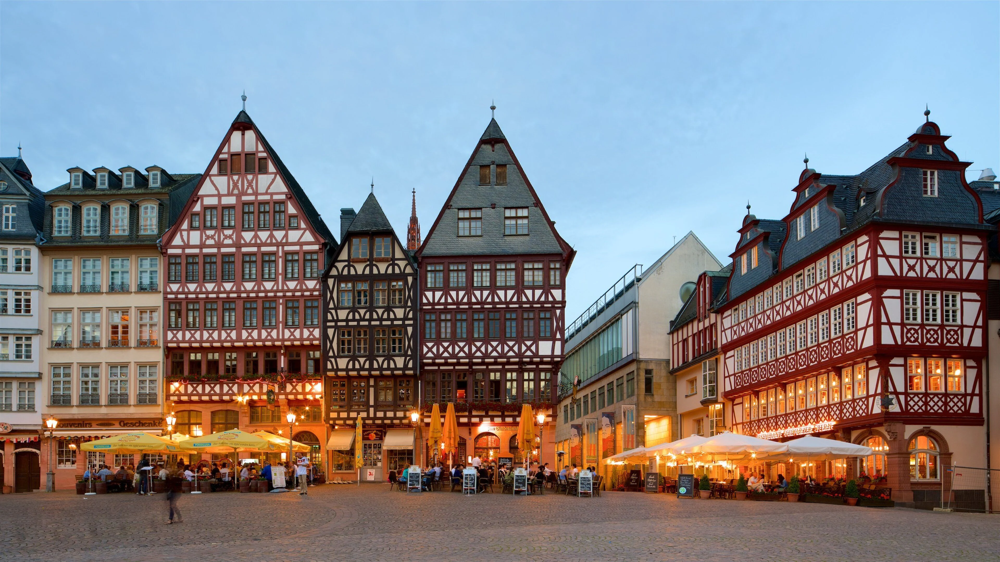
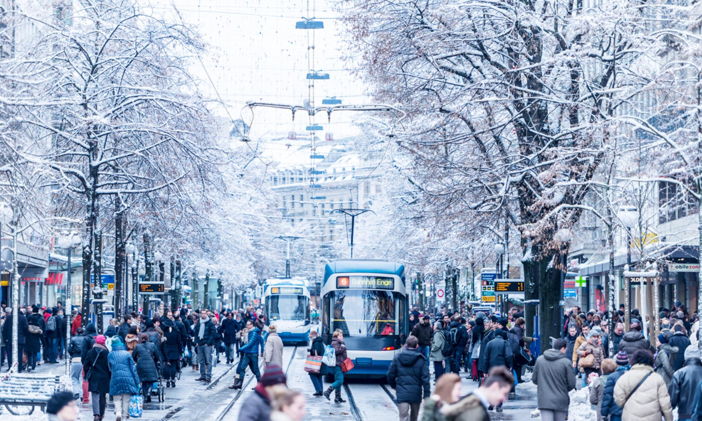
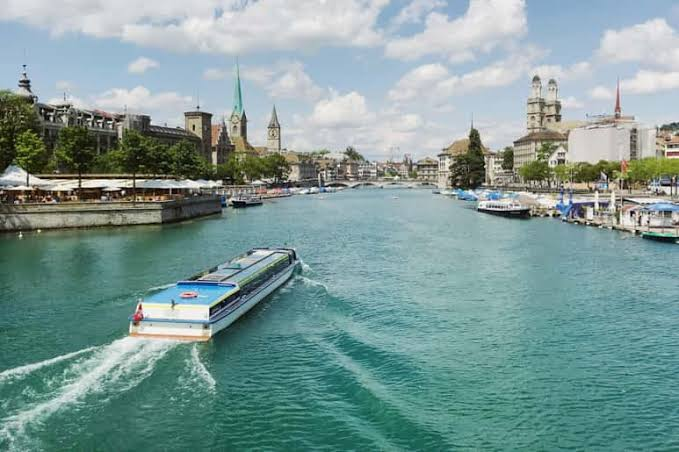
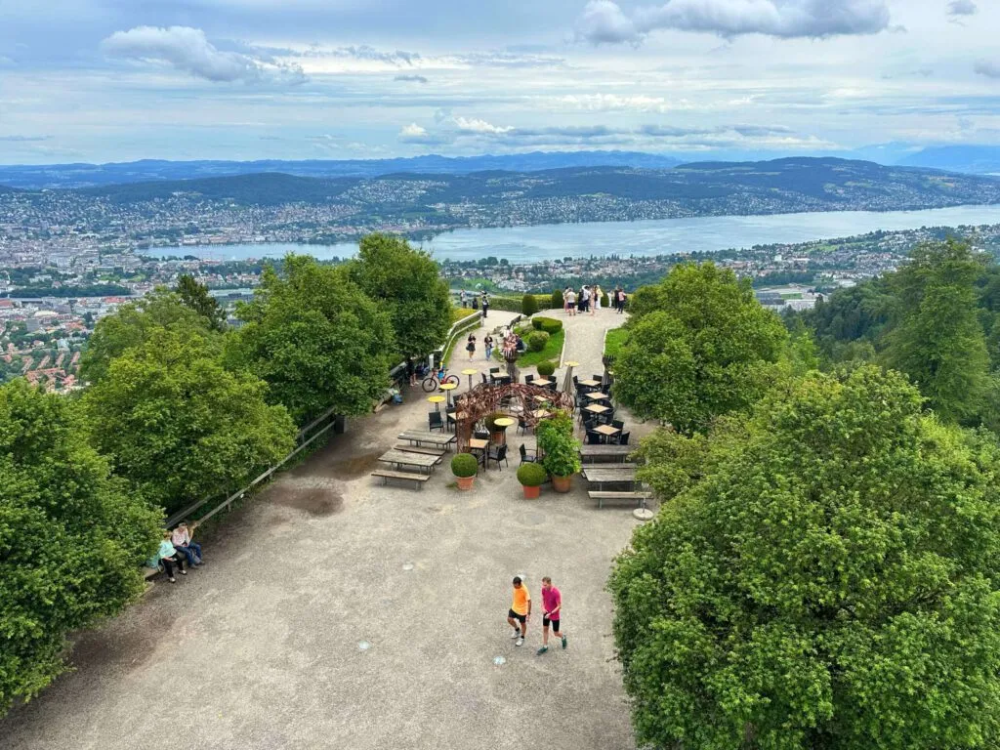

Zurique
Por Lourdes Mello
Por Lourdes Mello
Zurique é a maior cidade da Suíça, centro econômico e financeiro do país, localizada no nordeste do território às margens do Lago de Zurique e do Rio Limmat.
Principais Atrações:

Altstadt (Centro Histórico):
Ruas de paralelepípedos, a praça Lindenhof, e igrejas históricas como a Grossmünster, a Fraumünster (famosa pelos vitrais de Marc Chagall) e a Igreja de São Pedro.

Bahnhofstrasse:
Uma das avenidas mais famosas e exclusivas do mundo para compras de grifes e joalherias.

Lago de Zurique e Rio Limmat:
Ideais para passeios de barco, caminhadas nos calçadões (Limmatquai) ou mergulhos no verão.

Museus e Cultura:
O Kunsthaus Zürich (arte moderna), o Museu Nacional Suíço e o Lindt Home of Chocolate.

Uetliberg:
A montanha local com torre de observação e trilhas, oferecendo vista panorâmica da cidade e dos Alpes.